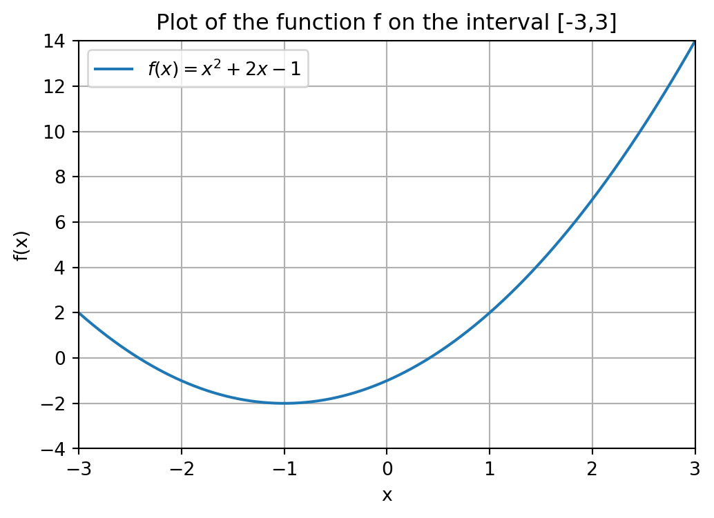
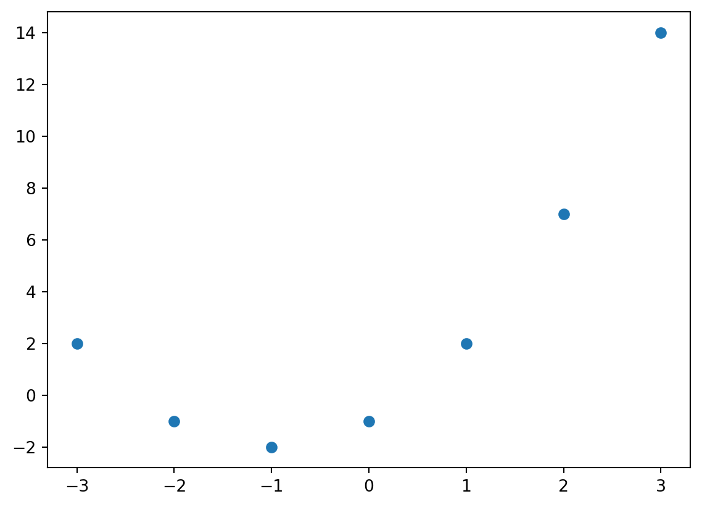
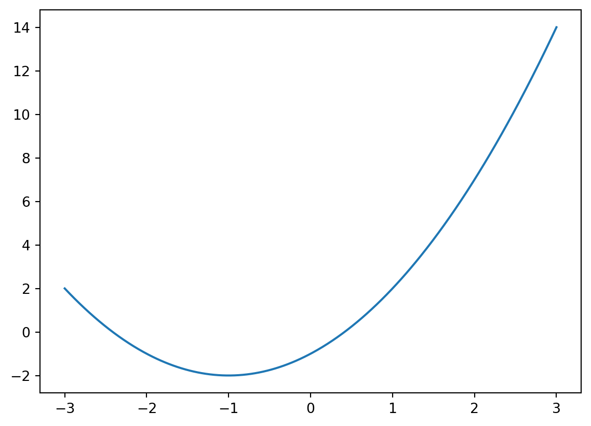
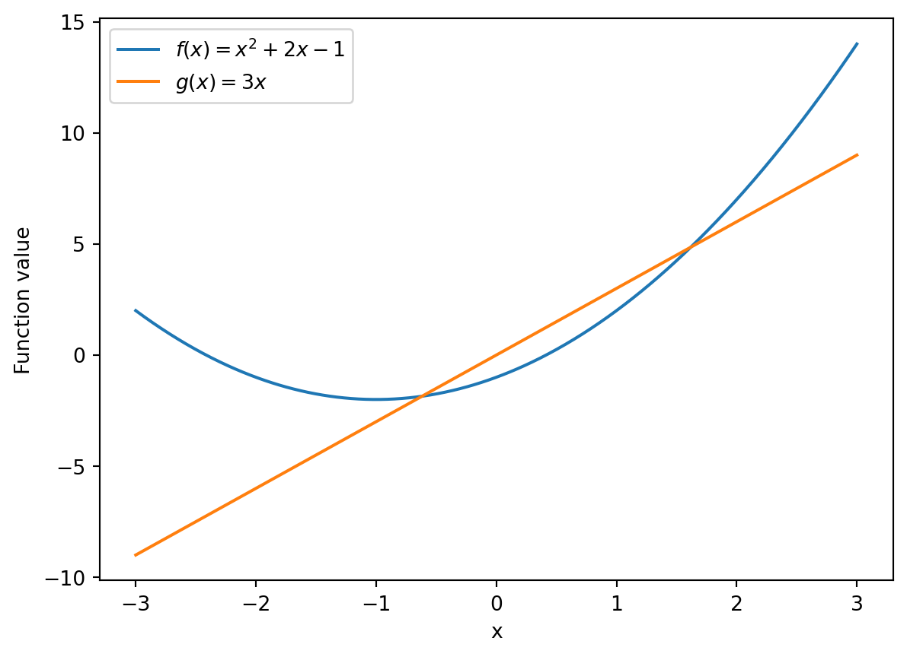
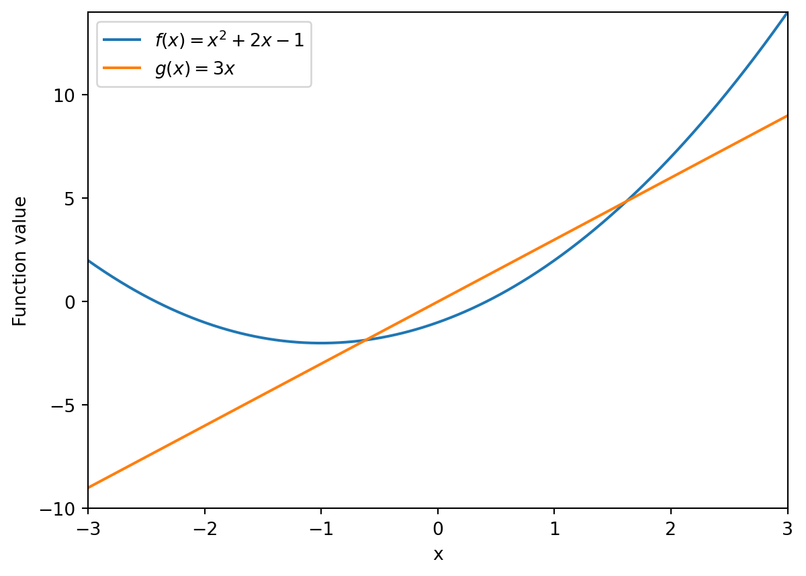

In this chapter we will see some mathematical algorithms from the scipy package (or module) as well as how to visualize data, e.g., some of the figures we have seen in earlier chapters, using matplotlib.
SciPy is a package that can be used to perform various mathematical task and algorithms, making it very important for data anlaysis purposes. The Matplotlib package is essential in Python to create insightful visual representations of your data and the analysis you performed on it.
We first discuss two fundamental mathematical tasks: finding a root of a mathematical function and minimizing a mathematical function. After that, we will explain how to visualize data and mathematical functions.
9.1 Root finding
Consider the function f(x) = x^2 + 2x - 1. A visualization of this function is given below. We will learn how to create this figure ourselves in Section 9.3.
Show code generating the plot below
import numpy as npimport matplotlib.pyplot as plt# Define the x rangex = np.linspace(-3, 3, 600)# Define the function fdef f(x):return x**2+2*x -1# Create the plotplt.figure(figsize=(6, 4))plt.plot(x, f(x), label='$f(x) = x^2 + 2x - 1$')# Add labels and titleplt.title('Plot of the function f on the interval [-3,3]')plt.xlabel('x')plt.ylabel('f(x)')# Add a gridplt.grid(True)# Set rangeplt.xlim(-3,3)plt.ylim(-4,14)# Add a legendplt.legend()# Show the plotplt.show()
A common task is to find a root x of a mathematical function f : \mathbb{R} \rightarrow \mathbb{R}. A root is a point that satisfies the equation f(x) = 0.
In our case, we want to solve the equation x^2 + 2x -1 = 0. You might remember from your high school math course that, for given numbers a, b and c, the roots of the quadratic function f(x) = ax^2 + bx + c, are given by
x_\ell = \frac{- b - \sqrt{b^2 - 4ac}}{2a} \ \ \text{ and } \ \ x_r = \frac{- b + \sqrt{b^2 - 4ac}}{2a}
where the subscript \ell is used to denote the fact that this will be the “left” root and r to denote the “right” root.
For f(x) = x^2 + 2x-1, we have a = 1, b = 2 and c = -1. Plugging in these values in the formula above gives x_\ell = -1 - \sqrt{2} \approx - 2.4142 and x_r = -1 + \sqrt{2} \approx 0.4142. Although this is an easy way to find the roots of a quadratic function, we want to be able to find roots of any function f, assuming they exist.
The easiest way to find a root of a general function is to use the the function fsolve() from the (sub)package scipy.optimize. This package contains many functions to carry out algorithmic tasks on mathematical functions. In order not having to write scipy.optimize the whole time we will import this package under the name optimize, just as we did with NumPy where we used the line import numpy as np. Below is the code snippet that carries out the root finding procedure.
import scipy.optimize as optimizedef f(x):return x**2+2*x -1guess =3f_zero = optimize.fsolve(f,guess) print("A root of the function f is given by", f_zero)
A root of the function f is given by [0.41421356]
In chronological order, this code does the following:
Import the optimize (sub)package from the scipy package.
Define f(x) = x^2 + 2x -1 as a Python function (Chapter 6).
Use optimize.fsolve(f,guess) so that Python knows that we want to use the function fsolve() from optimize.
The argument that is returned by fsolve() is assigned to the variable f_zero.
Print a message containing the root of f that was found.
The use of fsolve() requires some additional explanation. It takes two input arguments, the first one being a (mathematical) function f and the second one an initial guess for where a root of f might be, which we store in the variable guess. Note that you cannot reverse the order of the input arguments: f_zero = optimize.fsolve(guess,f) does not work!
We could also have used optimize.fsolve(f,3) instead of separately defining guess = 3 and then using guess as input argument. However, when coding, it is common practice to always define input data (the number 3 in this case) in a separate variable. Especially if the number would be used in multiple places in your code, this is useful.
It is important to observe that a Python function can itself be an input argument of another Python function! That is, the function f is an input argument of the function fsolve(). It is required to define the f as a Python function. That is, it is not possible to use the command optimize.fsolve(x**2 + 2*x - 1,guess).
The second input argument guess is needed by fsolve() to execute the underlying mathematical root finding method that is used to find a root of f. We do not go into the actual mathematical method that is being carried out in the background by Python when we execute fsolve()1, but the idea is that the method starts at the guess that we provide and then gradually finds its way to a root of f by doing various calculations.
In fact, the choice of initial guess can influence the outcome of fsolve(). That is, a different initial guess can lead the underlying mathematical method to a different root of the function. This is illustrated in the code below, where we find the other root -2.4142....
guess =-2f_zero = optimize.fsolve(f,guess)print("A root of the function f is given by", f_zero)
A root of the function f is given by [-2.41421356]
As you might have noted, the output of optimize.fsolve(f,guess) is a list containing one number, for example, the last piece of code returned [-2.41421356]. If you instead only want to output the number -2.41421356, i.e., the value of the element in the string, you can use optimize.fsolve(f,guess)[0] instead. This means that what is stored in f_zero is the 0-th (and only) element of the list optimize.fsolve(f,guess).
guess =-2f_zero = optimize.fsolve(f,guess)[0]print("A root of the function f is given by", f_zero)
A root of the function f is given by -2.414213562373095
We can also use root finding to solve other types of equations. Suppose we want to compute an x such that
f(x) = 6.
Moving the 6 to the left, we see that this is the same as computing an x such that f(x) - 6 = 0. Therefore, if we define the function g(x) := f(x) - 6, then an x that satisfies g(x) = 0 also satisfies f(x) = 6, and vice versa. Let us code this as well.
def g(x):return f(x) -6guess =4f_zero = optimize.fsolve(g,guess)[0]print("A number x satisfying f(x) = 6, is given by", f_zero)
A number x satisfying f(x) = 6, is given by 1.82842712474619
The function g works as follows: It computes f(x) by running the function f with the input x, and then substracting 6 from it. Note that we could have also defined g by returning x**2 + 2x - 1 - 6. It is, however, more convenient to just write f(x) - 6 here, because we have already defined the function f earlier. Also, if we would change the definition of the function f, the function g is automatically updated as well.
Everything we have seen up till now also allows us to write a general Python function to solve an equation of the form
f(x) = c
for a given function f and number c. In the example above, we had c = 6.
def solve_eq(f,c,guess):""" Input ---------- f : A mathematical function taking as input a variable x, c : The right hand side value of the equation f(x) = c, guess : The initial guess for fsolve(). Returns ------- A value x solving f(x) = c. """def g(x):return f(x) - c x = optimize.fsolve(g,guess)[0]return x
The function above takes as input the function f, the number c and an initial guess that fsolve() can use. Let us try out solve_eq() on some input data. The goal will be to solve the equation
3x^2 -4x + 1 = 5.
#We create the function h(x) = 3x^2 - 4x + 1 def h(x):return3*x**2-4*x +1#Right hand side of the equation h(x) = 5d =5#Our initial guess for fsolve() (we choose 1 here).initial_guess =1print("A solution x to h(x) = d is given by", solve_eq(h,d,guess))
A solution x to h(x) = d is given by 2.0
Note that the input arguments h, d and initial_guess need not have the same names as the local variables f, cguess in the function solve_eq(). What is important is that we input the arguments in the correct order in which we want them to be identified with the local variables. That is, by doing solve_eq(h,d,guess) Python knows that we want to assign the first input argument h to the first local variable f, the second input argument d to the second local variable c, and the third input argument initial_guess to the local variable guess.
9.2 Minimization
Another fundamental task in mathematics is to find the minimum value that a function can attain. Recall the function f(x) = x^2+2x-1 from the previous section.
Show code generating the plot below
import numpy as npimport matplotlib.pyplot as plt# Define the x rangex = np.linspace(-3, 3, 600)# Define the absolute value functiondef f(x):return x**2+2*x -1# Create the plotplt.figure(figsize=(6, 4))plt.plot(x, f(x), label='$f(x) = x^2 + 2x - 1$')# Add labels and titleplt.title('Plot of the function f on the interval [-3,3]')plt.xlabel('x')plt.ylabel('f(x)')# Add a gridplt.grid(True)# Set rangeplt.xlim(-3,3)plt.ylim(-4,14)# Add a legendplt.legend()# Show the plotplt.show()

It can be seen that the point x at which the function f is the lowest, i.e., attains its minimum is x = -1, and the function values in that point is f(-1) = -2. Python has various ways of finding the minimum of a function, the easiest-to-use being fmin() from the optimize module.
The syntax that is used for this function is similar to that of fsolve(). Although we already defined the function f in the previous section, we will redefine it in the code below for sake of completeness.
import scipy.optimize as optimizedef f(x):return x**2+2*x -1guess =1minimum = optimize.fmin(f,guess)print('The minimum of the function f is attained at x = ', minimum)
Optimization terminated successfully.
Current function value: -2.000000
Iterations: 19
Function evaluations: 38
The minimum of the function f is attained at x = [-1.]
Note that Python outputs some information in the console about the mathematical optimization procedure that was performed in order to find the minimum of the function. It displays the function value at the miminum that was found, in our case -2 = f(-1), and a number of iterations and function evaluations. These last two pieces of information are not relevant for us, but are useful for an expert who wants to understand better how well the optimization procedure performed. If you want, you can suppress all this information by adding disp=False or disp=0 as an argument to the fmin() function. This is illustrated below.
minimum = optimize.fmin(f,guess,disp=False)print('The minimum of the function f is attained at x = ', minimum)
The minimum of the function f is attained at x = [-1.]
Also here, if you want to return only the value -1.0 instead of the list [-1.0] you can do the following as we illustrated for fsolve() as well.
minimum = optimize.fmin(f,guess,disp=False)[0]print('The minimum of the function f is attained at x = ', minimum)
The minimum of the function f is attained at x = -1.0000000000000018
9.3 Visualization
In this section we will explain the basics for plotting functions and data, for which we will use the matplotlib.pyplot (sub)package. We import it under the name plt. You might wonder why we use the name plt and not the perhaps more obvious choise plot. This is because plot() is a command that we will be using, so we do not want to create any conflicts with this function when executing a Python script.
In this section we will explain step-by-step how to generate the figure that we have seen in the previous two sections. We start with plotting the function f(x) = x^2 + 2x -1 for some values of x in a two-dimensional figure.
import numpy as npimport matplotlib.pyplot as plt# Define the function fdef f(x):return x**2+2*x -1# Define the x range of x-valuesx = np.array([-3,-2,-1,0,1,2,3])# Compute the function values f(x[i]) of the elements x[i] # and store them in the array yy = f(x)#Create the figureplt.figure()# Create the plotplt.plot(x, y)# Show the plotplt.show()
You can view the figure in the Plots pane (or tab) in Spyder.
If the resolution of the plots in the Plots pane is bad, you can increase it by going to “Tools > Preferences > IPython console > Graphics > Inline backend > Resolution” and set the resolution to, for example, 300 dpi.
You can get the Plots pane in fullscreen by going to the button with the three horizontal lines in the top right corner and choose “Undock”. You can “Dock” the pane again as well if you want to leave the fullscreen mode.
IPython Console
We will next explain what the code above is doing. After defining the function f, we create the vector (i.e., Numpy array)
x = [x_1,x_2,x_3,x_4,x_5,x_6,x_7] = [-3,-2,-1,0,1,2,3].
We then compute the function values f(x_i) for i = 1,\dots,7 and store these in the vector y. This might seem a bit strange. We defined the vector f as being a function that takes as input a number x and outputs the number f(x), but now we are inputting a whole vector of numbers x into the function f. Python is capable of handling this, and deals with this by returning the function value for every element of the vector x. That is, it will output the vector
We call f a vectorized function: At first glance, it is defined to have a single number as input, but it can also handle a vector as input, in which case it returns the function evaluation for every element of the vector. This typically only works when x is defined to be a Numpy array. If we would have defined x = [-3,-2,-1,0,1,2,3] as a list of numbers, the code would have given an error (try this yourself!).
If you use mathematical functions or functions from Numpy, Scipy or Matplotlib, it is best to store numerical input data for these functions in Numpy arrays (and not lists).
Next, we create an (empty) figure using the command plt.figure(). Then comes the most important command, plt.plot(x,y), that plots the elements in the vector x against the elements in the vector y = f(x), and connects consecutive combinations (x_i,y_i) and (x_{i+1},y_{i+1}) with a line segment. For example, we have (x_1,y_1) = (-3,2) and (x_2,y_2) = (-2,-1). The left most line segment is formed by connecting these points.
If you only want to plot the points (x_i,y_i), and not the line segments, you can use plt.scatter(x,y) instead of plt.plot(x,y).
import numpy as npimport matplotlib.pyplot as plt# Define the function fdef f(x):return x**2+2*x -1# Define the x range of x-valuesx = np.array([-3,-2,-1,0,1,2,3])# Compute the function values f(x[i]) of the elements x[i] # and store them in the array yy = f(x)#Create the figureplt.figure()# Create the plotplt.scatter(x, y)

Observe that the (blue) line in the figure that was generated using plt.plot(x,y) is not as “smooth” as in the figures in the previous sections, where the function does not (visibly) have these segments. To get a smoother function line, we can include more points in the vector x.
A quick way to generate a number k of evenly spaced points in the interval [a,b] is the command np.linspace(a,b,k) from the Numpy package. It takes as input the bounds of the interval [a,b] and the number of points k that we want to have in it. Consider the following example, where we want to generate k = 11 points in the interval [a,b] = [0,1].
import numpy as npx = np.linspace(0,1,11)print(x)
[0. 0.1 0.2 0.3 0.4 0.5 0.6 0.7 0.8 0.9 1. ]
Note that the end points of the interval form the first and last element in the vector x. “Evenly spaced” refers to the fact that the distance between two consecutive points in x is always the same. For this x this common distance is 0.1 = (b-a)/(k-1).
Let us plot again the function f, but this time with 600 elements in x in the interval [-3,3]. We use plt.plot() again, instead of plt.scatter(). We now obtain a much smoother function line.
import numpy as npimport matplotlib.pyplot as plt# Define the function fdef f(x):return x**2+2*x -1# Define the x range of x-valuesx = np.linspace(-3,3,600)# Compute the function values f(x[i]) of the elements x[i] # and store them in the array yy = f(x)#Create the figureplt.figure()# Create the plotplt.plot(x, y)

You can add a legend for the line/points that you plot by using the label argument of plt.plot(). For example we can add the function description using plt.plot(x,y,label='$f(x) = x^2 + 2x - 1$'). This is in particular useful if you plot multiple functions in one figure, as the example below illustrates. There we plot the functions f and g, with g(x) = 3x a new function. To have the labels appear in the legend of the figure, you need to add a legend to the figure with plt.legend().
If you want to add labels to the horizontal and vertical axis, you can use the commands plt.xlabel() and plt.ylabel().
import numpy as npimport matplotlib.pyplot as plt# Define the function fdef f(x):return x**2+2*x -1# Define the function gdef g(x):return3*x# Define the x range of x-valuesx = np.linspace(-3,3,600)# Compute the function values f(x[i]) of the elements x[i] # and store them in the array yy = f(x)z = g(x)#Create the figureplt.figure()# Create the plotplt.plot(x, y, label='$f(x) = x^2 + 2x - 1$')plt.plot(x, z, label='$g(x) = 3x$')# Create labels for axesplt.xlabel('x')plt.ylabel('Function value')# Create the legend with the specified labelsplt.legend()

You might observe that the range on the vertical axis changed now that we added a second function to the plot. When we only plotted the function f, the vertical axis ranged from -2 to 14, but now with the function g added to it, it ranges from -10 to 15.
You can fix the range [c,d] on the vertical axis using the command plt.ylim(c,d), and to fix the range of the horizontal axis to [a,b], you can use plt.xlim(a,b). In the figure below, we fix the vertical range to [c,d] = [-10,14] and the horizontal axis to [a,b] = [-3,3].
import numpy as npimport matplotlib.pyplot as plt# Define the function fdef f(x):return x**2+2*x -1# Define the function gdef g(x):return3*x# Define the x range of x-valuesx = np.linspace(-3,3,600)# Compute the function values f(x[i]) of the elements x[i] # and store them in the array yy = f(x)z = g(x)#Create the figureplt.figure()# Create the plotplt.plot(x, y, label='$f(x) = x^2 + 2x - 1$')plt.plot(x, z, label='$g(x) = 3x$')# Create labels for axesplt.xlabel('x')plt.ylabel('Function value')# Create the legend with the specified labelsplt.legend()# Fix the range of the axesplt.xlim(-3,3)plt.ylim(-10,14)

Finally, you can also add a title to the plot using the command plt.title() as well as a grid in the background of the figure using plt.grid(). These are illustrated in the figure below.
import numpy as npimport matplotlib.pyplot as plt# Define the function fdef f(x):return x**2+2*x -1# Define the function gdef g(x):return3*x# Define the x range of x-valuesx = np.linspace(-3,3,600)# Compute the function values f(x[i]) of the elements x[i] # and store them in the array yy = f(x)z = g(x)#Create the figureplt.figure()# Create the plotplt.plot(x, y, label='$f(x) = x^2 + 2x - 1$')plt.plot(x, z, label='$g(x) = 3x$')# Create labels for axesplt.xlabel('x')plt.ylabel('Function value')# Create the legend with the specified labelsplt.legend()# Fix the range of the axesplt.xlim(-3,3)plt.ylim(-10,14)# Add title to the plotplt.title('A first plot in Python of two functions')# Add grid to the backgroundplt.grid()
This completes the description of how to plot figures like those we saw in the previous two sections. As a final remark, there are many more plotting options that we do not cover here. For example, with the plt.xticks() and plt.yticks() commands you can specify the numbers you want to have displayed on the horizontal and vertical axis, respectively. Also, there are commands to specify line color, width, type (e.g., dashed) and much more! You do not need to know this, but feel free to play around with such commands!
In fact, there exist many root finding methods. A very famous one is Newton’s method developed by Isaac Newton, a famous sciencist that you might have heard of. The reason why there are so many root finding methods is that some work better than others on a given function f. There are other ways to do root finding in Python that allow you to specify a root finding method yourself, but this is a more advanced topic beyond the scope of this course.↩︎